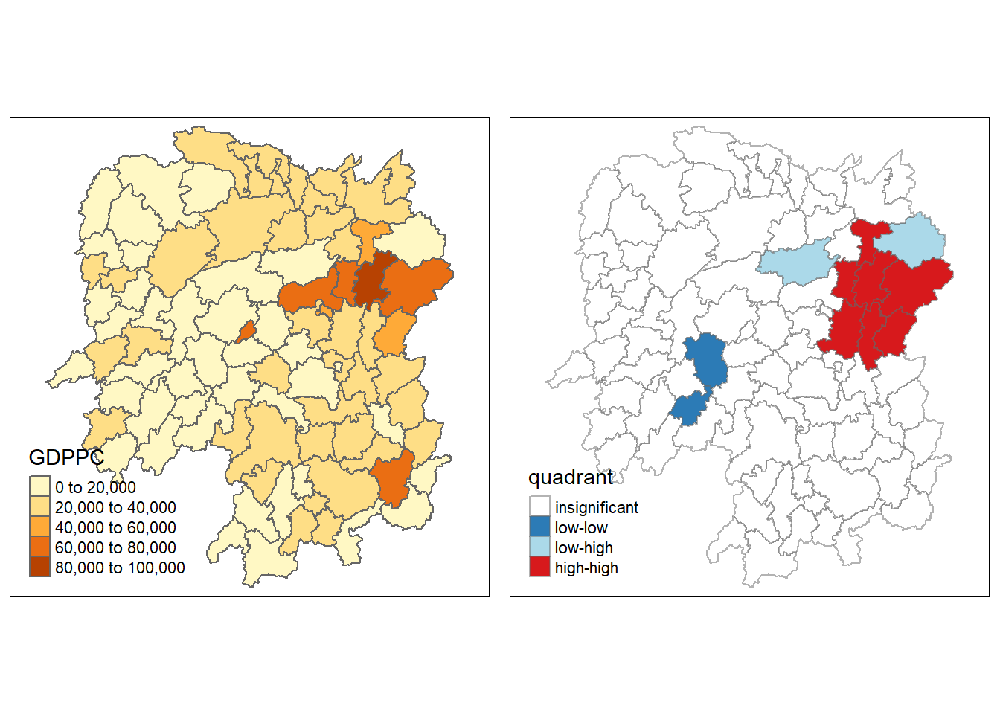
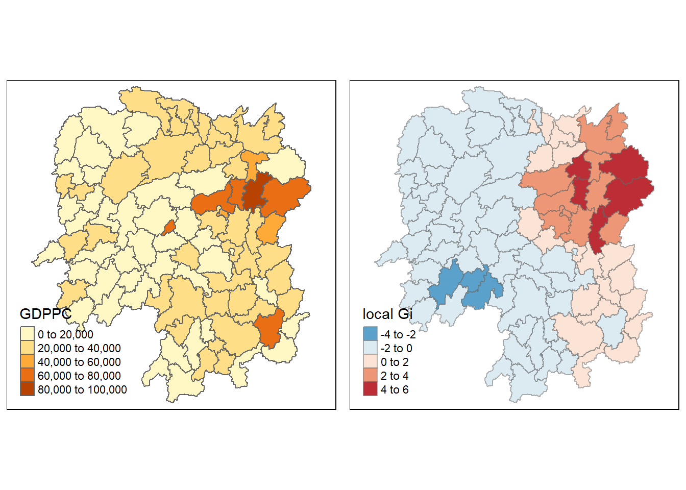

pacman::p_load(sf, spdep, tidyverse, tmap)Hands-on Exercise 5B: Local Measures of Spatial Autocorrelation
1.0 Introduction
In spatial policy, one of the main development objective of the local government and planners is to ensure equal distribution of development in the province. Our task in this study, hence, is to apply appropriate spatial statistical methods to discover if development are even distributed geographically. If the answer is No. Then, our next question will be “is there sign of spatial clustering?”. And, if the answer for this question is yes, then our next question will be “where are these clusters?”
In this case study, we are interested to examine the spatial pattern of a selected development indicator (i.e. GDP per capita) of Hunan Provice, People Republic of China.
1.1 Getting Started
In this hands-on exercise, we will be using the following packages:
sf
spdep
tidyverse
tmap
2.0 Data Acquisition
We will be using 2 datasets in this exercise:
Hunan county boundary layer
Hunan_2012.csv
3.0 Geospatial Data Handling
We will be using the st_read() from sf package to import the data into RStudio.
3.1 Importing Geospatial Data
3.1.1 Importing Geospatial Data in shapefile format
hunan_sf <- st_read(dsn = "data/geospatial", layer = "Hunan")Reading layer `Hunan' from data source
`C:\kt526\IS415-GAA\Hands-on_Ex\Hands-on_Ex05\data\geospatial'
using driver `ESRI Shapefile'
Simple feature collection with 88 features and 7 fields
Geometry type: POLYGON
Dimension: XY
Bounding box: xmin: 108.7831 ymin: 24.6342 xmax: 114.2544 ymax: 30.12812
Geodetic CRS: WGS 84The message above reveals that the geospatial objects are polygon features. There are a total of 88 polygon features and 7 fields in hunan_sf. hunan_sf is in WGS 84 geographic coordinates systems. The bounding box provides the x extend and y extend of the data.
3.2 Importing Aspatial Data
3.2.1 Importing Aspatial Data in csv format
Since Hunan_2012.csv is in csv file format, we will use read_csv() of readr package to import it.
hunan2012 <- read_csv("data/aspatial/Hunan_2012.csv")3.3 Data Preparation
hunan_joined <- left_join(hunan_sf, hunan2012)%>% select(1:4, 7, 15)Note:
byargument in left_join() uses NULL as default if it is not specified. A natural join will be performed join all variables in common acrosshunan_sfandhunan2012.In our case,
Countyis the common variable betweenhunan_sfandhunan2012.
4.0 Geospatial Visualization – Visualising Regional Development Indicator
Now, we are going to prepare a basemap and a choropleth map showing the distribution of GDPPC 2012 by using qtm() of tmap package.
equal <- tm_shape(hunan_joined) +
tm_fill("GDPPC",
n = 5,
style = "equal") +
tm_borders(alpha = 0.5) +
tm_layout(main.title = "Equal interval classification")
quantile <- tm_shape(hunan_joined) +
tm_fill("GDPPC",
n = 5,
style = "quantile") +
tm_borders(alpha = 0.5) +
tm_layout(main.title = "Equal quantile classification")
tmap_arrange(equal,
quantile,
asp=1,
ncol=2)
5.0 Local Measures of Spatial Autocorrelation
In the previous Hands-on Exercise, we learn how to compute global spatial autocorrelation statistics and perform spatial complete randomness test for global spatial autocorrelation. In this section, we will be looking at the local measures instead.
5.1 Computing Contiguity Spatial Weights
Similar to the previous Hands-on Exercise, we need to construct a spatial weights of the study area. The spatial weights is used to define the neighbourhood relationships between the geographical units (i.e. county) in the study area.
The poly2nb() of spdep package is used to compute contiguity weight matrices for the study area.
wm_q <- poly2nb(hunan_joined,
queen=TRUE)
summary(wm_q)Neighbour list object:
Number of regions: 88
Number of nonzero links: 448
Percentage nonzero weights: 5.785124
Average number of links: 5.090909
Link number distribution:
1 2 3 4 5 6 7 8 9 11
2 2 12 16 24 14 11 4 2 1
2 least connected regions:
30 65 with 1 link
1 most connected region:
85 with 11 linksThe summary report above shows that there are 88 area units in Hunan. The most connected area unit has 11 neighbours. There are two area units with only one neighbours.
5.2 Row-standardised weights matrix
Next, we need to assign weights to each neighboring polygon. In our case, each neighboring polygon will be assigned equal weight (style=“W”).
rswm_q <- nb2listw(wm_q,
style="W",
zero.policy = TRUE)
rswm_qCharacteristics of weights list object:
Neighbour list object:
Number of regions: 88
Number of nonzero links: 448
Percentage nonzero weights: 5.785124
Average number of links: 5.090909
Weights style: W
Weights constants summary:
n nn S0 S1 S2
W 88 7744 88 37.86334 365.91475.3 Cluster and Outlier Analysis
Local Indicators of Spatial Association or LISA are statistics that evaluate the existence of clusters in the spatial arrangement of a given variable. For instance, if we are studying cancer rates among census tracts in a given city local clusters in the rates mean that there are areas that have higher or lower rates than is to be expected by chance alone; that is, the values occurring are above or below those of a random distribution in space.
In this section, we will learn how to apply appropriate Local Indicators for Spatial Association (LISA), especially local Moran’s I to detect cluster and/or outlier from GDP per capita 2012 of Hunan Province, PRC.
5.3.1 Computing local Moran’s I
To compute local Moran’s I of GDPPC2012 at the county level the localmoran() function of spdep package will be used. It computes Ii values, given a set of zi values and a listw object providing neighbour weighting information for the polygon associated with the zi values.
fips <- order(hunan_joined$County)
localMI <- localmoran(hunan_joined$GDPPC, rswm_q)
head(localMI) Ii E.Ii Var.Ii Z.Ii Pr(z != E(Ii))
1 -0.001468468 -2.815006e-05 4.723841e-04 -0.06626904 0.9471636
2 0.025878173 -6.061953e-04 1.016664e-02 0.26266425 0.7928094
3 -0.011987646 -5.366648e-03 1.133362e-01 -0.01966705 0.9843090
4 0.001022468 -2.404783e-07 5.105969e-06 0.45259801 0.6508382
5 0.014814881 -6.829362e-05 1.449949e-03 0.39085814 0.6959021
6 -0.038793829 -3.860263e-04 6.475559e-03 -0.47728835 0.6331568localmoran() function returns a matrix of values whose columns are:
Ii: the local Moran’s I statisticsE.Ii: the expectation of local moran statistic under the randomisation hypothesisVar.Ii: the variance of local moran statistic under the randomisation hypothesisZ.Ii:the standard deviate of local moran statisticPr(): the p-value of local moran statistic
We can list the contents of the local Moran matrix derived using printCoefmat().
Note: We added head() to display the top 6 rows.
printCoefmat(head(data.frame(
localMI[fips,],
row.names=hunan_joined$County[fips]),
check.names=FALSE)) Ii E.Ii Var.Ii Z.Ii Pr.z....E.Ii..
Anhua -2.2493e-02 -5.0048e-03 5.8235e-02 -7.2467e-02 0.9422
Anren -3.9932e-01 -7.0111e-03 7.0348e-02 -1.4791e+00 0.1391
Anxiang -1.4685e-03 -2.8150e-05 4.7238e-04 -6.6269e-02 0.9472
Baojing 3.4737e-01 -5.0089e-03 8.3636e-02 1.2185e+00 0.2230
Chaling 2.0559e-02 -9.6812e-04 2.7711e-02 1.2932e-01 0.8971
Changning -2.9868e-05 -9.0010e-09 1.5105e-07 -7.6828e-02 0.93885.3.2 Mapping the local Moran’s I
Before mapping the local Moran’s I map, we need to append the local Moran’s I dataframe (i.e. localMI) onto hunan SpatialPolygonDataFrame. The output SpatialPolygonDataFrame is called hunan.localMI.
hunan.localMI <- cbind(hunan_joined,localMI) %>%
rename(Pr.Ii = Pr.z....E.Ii..)5.3.3 Mapping local Moran’s I values
Using choropleth mapping functions of tmap package, we can plot the local Moran’s I values.
tm_shape(hunan.localMI) +
tm_fill(col = "Ii",
style = "pretty",
palette = "RdBu",
title = "local moran statistics") +
tm_borders(alpha = 0.5)
5.3.4 Mapping local Moran’s I p-values
The choropleth shows there is evidence for both positive and negative Ii values. However, it is useful to consider the p-values for each of these values, as consider above.
tm_shape(hunan.localMI) +
tm_fill(col = "Pr.Ii",
breaks=c(-Inf, 0.001, 0.01, 0.05, 0.1, Inf),
palette="-Blues",
title = "local Moran's I p-values") +
tm_borders(alpha = 0.5)
5.3.5 Mapping both local Moran’s I values and p-values
If we want to compare choropleth maps for both Moran’s I values and p-values, we can do the fo
localMI.map <- tm_shape(hunan.localMI) +
tm_fill(col = "Ii",
style = "pretty",
title = "local moran statistics") +
tm_borders(alpha = 0.5)
pvalue.map <- tm_shape(hunan.localMI) +
tm_fill(col = "Pr.Ii",
breaks=c(-Inf, 0.001, 0.01, 0.05, 0.1, Inf),
palette="-Blues",
title = "local Moran's I p-values") +
tm_borders(alpha = 0.5)
tmap_arrange(localMI.map, pvalue.map, asp=1, ncol=2)
5.4 Creating a LISA Cluster Map
The LISA Cluster Map shows the significant locations color coded by type of spatial autocorrelation. The first step before we can generate the LISA cluster map is to plot the Moran scatterplot.
5.4.1 Plotting Moran scatterplot
The Moran scatterplot is an illustration of the relationship between the values of the chosen attribute at each location and the average value of the same attribute at neighboring locations. We can plot the Moran’s scatterplot of GDPPC 2012 by using moran.plot() of spdep package.
nci <- moran.plot(hunan_joined$GDPPC, rswm_q,
labels=as.character(hunan_joined$County),
xlab="GDPPC 2012",
ylab="Spatially Lag GDPPC 2012")
Notice that the plot is split in 4 quadrants. The top right corner belongs to areas that have high GDPPC and are surrounded by other areas that have the average level of GDPPC.
5.4.2 Plotting Moran scatterplot with standardised variable
First we will use scale() to centers and scales the variable. Here centering is done by subtracting the mean (omitting NAs) the corresponding columns, and scaling is done by dividing the (centered) variable by their standard deviations.
The as.vector() is added to the end is to make sure that the data type we get out of this is a vector, that map neatly into our dataframe.
hunan_joined$Z.GDPPC <- scale(hunan_joined$GDPPC) %>%
as.vector Now, we are ready to plot the Moran scatterplot again.
nci2 <- moran.plot(hunan_joined$Z.GDPPC, rswm_q,
labels=as.character(hunan_joined$County),
xlab="z-GDPPC 2012",
ylab="Spatially Lag z-GDPPC 2012")
5.4.3 Preparing LISA map classes
quadrant <- vector(mode="numeric",length=nrow(localMI))
hunan_joined$lag_GDPPC <- lag.listw(rswm_q, hunan_joined$GDPPC)
DV <- hunan_joined$lag_GDPPC - mean(hunan_joined$lag_GDPPC)
LM_I <- localMI[,1]
signif <- 0.05
quadrant[DV <0 & LM_I>0] <- 1
quadrant[DV >0 & LM_I<0] <- 2
quadrant[DV <0 & LM_I<0] <- 3
quadrant[DV >0 & LM_I>0] <- 4
quadrant[localMI[,5]>signif] <- 0- 1
- Derive the spatially lagged variable of interest (i.e. GDPPC)
- 2
- Center the spatially lagged variable around its mean
- 3
- Center the Local Moran around its mean
- 4
- Set a statistical significance level for the local Moran
- 5
- Define the low-low (1) category
- 6
- Define the low-high (2) category
- 7
- Define the high-low (3) category
- 8
- Define the low-high (4) category
- 9
- Place non-significant Moran in the category 0
5.4.3 Plotting LISA map
hunan.localMI$quadrant <- quadrant
colors <- c("#ffffff", "#2c7bb6", "#abd9e9", "#fdae61", "#d7191c")
clusters <- c("insignificant", "low-low", "low-high", "high-low", "high-high")
tm_shape(hunan.localMI) +
tm_fill(col = "quadrant",
style = "cat",
palette = colors[c(sort(unique(quadrant)))+1],
labels = clusters[c(sort(unique(quadrant)))+1],
popup.vars = c("")) +
tm_view(set.zoom.limits = c(11,17)) +
tm_borders(alpha=0.5)
For effective interpretation, it is better to plot both the local Moran’s I values map and its corresponding p-values map next to each other.
gdppc <- qtm(hunan_joined, "GDPPC")
hunan.localMI$quadrant <- quadrant
colors <- c("#ffffff", "#2c7bb6", "#abd9e9", "#fdae61", "#d7191c")
clusters <- c("insignificant", "low-low", "low-high", "high-low", "high-high")
LISAmap <- tm_shape(hunan.localMI) +
tm_fill(col = "quadrant",
style = "cat",
palette = colors[c(sort(unique(quadrant)))+1],
labels = clusters[c(sort(unique(quadrant)))+1],
popup.vars = c("")) +
tm_view(set.zoom.limits = c(11,17)) +
tm_borders(alpha=0.5)
tmap_arrange(gdppc, LISAmap,
asp=1, ncol=2)
5.5 Hot Spot and Cold Spot Area Analysis
Beside detecting cluster and outliers, localised spatial statistics can be also used to detect hot spot and/or cold spot areas.
The term ‘hot spot’ has been used generically across disciplines to describe a region or value that is higher relative to its surroundings (Lepers et al 2005, Aben et al 2012, Isobe et al 2015).
5.5.1 Getis and Ord’s G-Statistics
An alternative spatial statistics to detect spatial anomalies is the Getis and Ord’s G-statistics (Getis and Ord, 1972; Ord and Getis, 1995). It looks at neighbours within a defined proximity to identify where either high or low values clutser spatially. Here, statistically significant hot-spots are recognised as areas of high values where other areas within a neighbourhood range also share high values too.
The analysis consists of three steps:
Deriving spatial weight matrix
Computing Gi statistics
Mapping Gi statistics
5.5.2 Deriving distance-based spatial weight matrix
First, we need to define a new set of neighbours. Whist the spatial autocorrelation considered units which shared borders, for Getis-Ord we are defining neighbours based on distance.
There are two type of distance-based proximity matrix, they are:
fixed distance weight matrix; and
adaptive distance weight matrix
5.5.2.1 Deriving the centroid
longitude <- map_dbl(hunan_joined$geometry, ~st_centroid(.x)[[1]])
latitude <- map_dbl(hunan_joined$geometry, ~st_centroid(.x)[[2]])
coords <- cbind(longitude, latitude)5.5.2.2 Determine the cut-off distance
k1 <- knn2nb(knearneigh(coords))
k1dists <- unlist(nbdists(k1, coords, longlat = TRUE))
summary(k1dists) Min. 1st Qu. Median Mean 3rd Qu. Max.
24.79 32.57 38.01 39.07 44.52 61.79 5.5.2.3 Computing fixed and adaptive distance weight matrix
wm_d62 <- dnearneigh(coords, 0, 62, longlat = TRUE)
wm62_lw <- nb2listw(wm_d62, style = 'B')
summary(wm62_lw)Characteristics of weights list object:
Neighbour list object:
Number of regions: 88
Number of nonzero links: 324
Percentage nonzero weights: 4.183884
Average number of links: 3.681818
Link number distribution:
1 2 3 4 5 6
6 15 14 26 20 7
6 least connected regions:
6 15 30 32 56 65 with 1 link
7 most connected regions:
21 28 35 45 50 52 82 with 6 links
Weights style: B
Weights constants summary:
n nn S0 S1 S2
B 88 7744 324 648 5440knn <- knn2nb(knearneigh(coords, k=8))
knn_lw <- nb2listw(knn, style = 'B')
summary(knn_lw)Characteristics of weights list object:
Neighbour list object:
Number of regions: 88
Number of nonzero links: 704
Percentage nonzero weights: 9.090909
Average number of links: 8
Non-symmetric neighbours list
Link number distribution:
8
88
88 least connected regions:
1 2 3 4 5 6 7 8 9 10 11 12 13 14 15 16 17 18 19 20 21 22 23 24 25 26 27 28 29 30 31 32 33 34 35 36 37 38 39 40 41 42 43 44 45 46 47 48 49 50 51 52 53 54 55 56 57 58 59 60 61 62 63 64 65 66 67 68 69 70 71 72 73 74 75 76 77 78 79 80 81 82 83 84 85 86 87 88 with 8 links
88 most connected regions:
1 2 3 4 5 6 7 8 9 10 11 12 13 14 15 16 17 18 19 20 21 22 23 24 25 26 27 28 29 30 31 32 33 34 35 36 37 38 39 40 41 42 43 44 45 46 47 48 49 50 51 52 53 54 55 56 57 58 59 60 61 62 63 64 65 66 67 68 69 70 71 72 73 74 75 76 77 78 79 80 81 82 83 84 85 86 87 88 with 8 links
Weights style: B
Weights constants summary:
n nn S0 S1 S2
B 88 7744 704 1300 230145.5.3 Computing Gi statistics
fips <- order(hunan_joined$County)
gi.fixed <- localG(hunan_joined$GDPPC, wm62_lw)hunan_fixed.gi <- cbind(hunan_joined, as.matrix(gi.fixed)) %>%
rename(gstat_fixed = as.matrix.gi.fixed.)fips <- order(hunan_joined$County)
gi.adaptive <- localG(hunan_joined$GDPPC, knn_lw)hunan_adaptive.gi <- cbind(hunan_joined, as.matrix(gi.adaptive)) %>%
rename(gstat_adaptive = as.matrix.gi.adaptive.)5.5.4 Mapping Gi values
gdppc <- qtm(hunan_joined, "GDPPC")
Gimap <-tm_shape(hunan_fixed.gi) +
tm_fill(col = "gstat_fixed",
style = "pretty",
palette="-RdBu",
title = "local Gi") +
tm_borders(alpha = 0.5)
tmap_arrange(gdppc, Gimap, asp=1, ncol=2)
gdppc<- qtm(hunan_joined, "GDPPC")
Gimap <- tm_shape(hunan_adaptive.gi) +
tm_fill(col = "gstat_adaptive",
style = "pretty",
palette="-RdBu",
title = "local Gi") +
tm_borders(alpha = 0.5)
tmap_arrange(gdppc,
Gimap,
asp=1,
ncol=2)